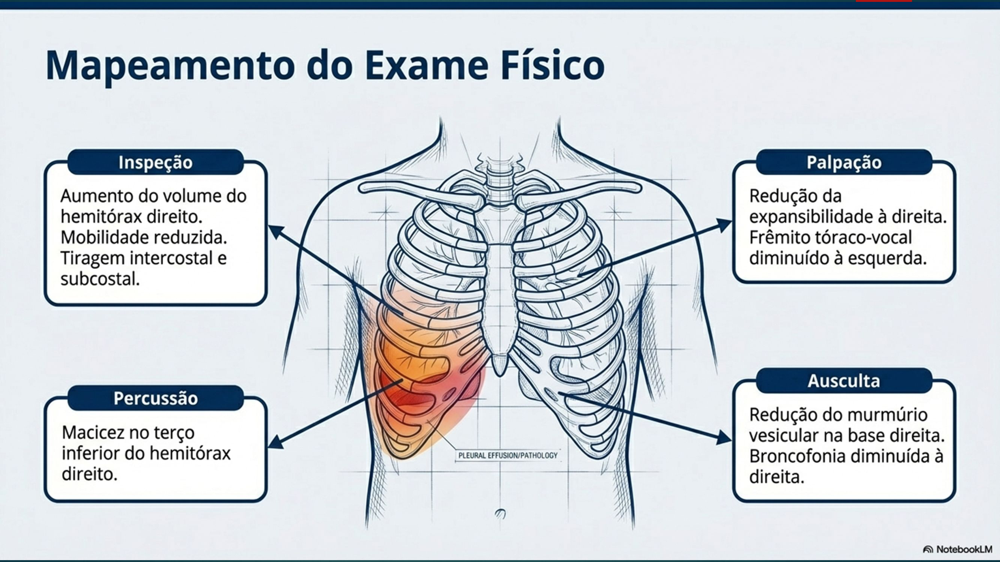
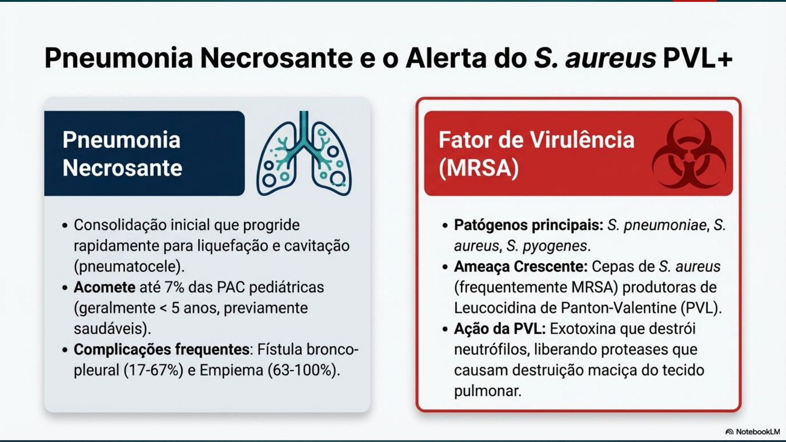
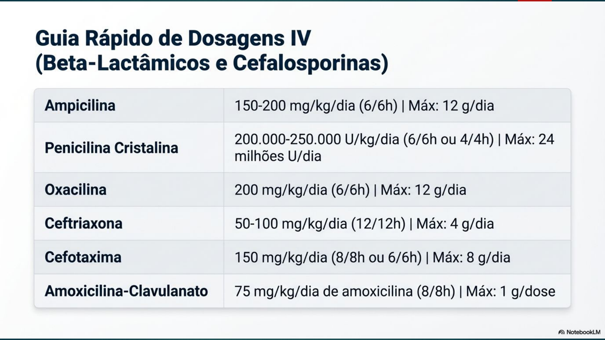

Pneumonia em Pediatria (PAC)
Definição
Pneumonia Adquirida na Comunidade (PAC): inflamação do parênquima pulmonar em criança que não esteve hospitalizada nos últimos 30 dias.
Diagnóstico Clínico — Tríade Principal

Febre + Tosse + Taquipneia (sem sibilância) = pneumonia até prova em contrário
⚠️ A taquipneia é o sinal mais sensível de pneumonia em crianças
Pontos de Corte de Taquipneia (OMS)
| Faixa Etária | Taquipneia (irpm) |
|---|---|
| <2 meses | ≥ 60 |
| 2–11 meses | ≥ 50 |
| 1–5 anos | ≥ 40 |
| ≥ 5 anos | ≥ 30 |
Etiologia por Faixa Etária
| Faixa Etária | Agentes Principais | Observação |
|---|---|---|
| <2 meses | S. agalactiae (GBS), gram-negativos, Listeria, Chlamydia trachomatis | Chlamydia: afebril, tosse coqueluchóide, conjuntivite |
| 2 meses – 5 anos | S. pneumoniae (principal), viral (VSR, influenza, rinovírus) | Pneumococo = mais comum bacteriano |
| ≥ 5 anos (escolar) | S. pneumoniae + Mycoplasma pneumoniae | Mycoplasma: evolução arrastada, sibilância, dor torácica |
Pneumonias Atípicas

| Agente | Faixa Etária | Características |
|---|---|---|
| Mycoplasma pneumoniae | >5 anos | Tosse persistente, sibilância, mal-estar, cefaleia, artralgia, evolução arrastada |
| Chlamydia trachomatis | Lactentes 4–12 semanas | AFEBRIL, tosse paroxística tipo coqueluche, conjuntivite prévia (50%) |
Classificação e Conduta — OMS Simplificada

| Classificação | Critérios | Conduta |
|---|---|---|
| Pneumonia | Taquipneia (sem tiragem) > 2 meses | Ambulatorial |
| Pneumonia Grave | Tiragem subcostal + taquipneia | Internação + ATB parenteral |
| Pneumonia Muito Grave | <2 meses: qualquer tosse + dificuldade respiratória | Internação obrigatória |
Indicações de Internação
- Lactente <2 meses com tosse + FR ≥ 60 irpm
- SatO₂ <92% em ar ambiente
- Abolição do murmúrio vesicular (derrame pleural/empiema)
- Desnutrição grave
- Sonolência ou rebaixamento do nível de consciência
- Recusa alimentar
- Prostração — comprometimento do estado geral
- Falha terapêutica ambulatorial
Exames Complementares
- Diagnóstico é clínico — dispensar RX de rotina em PAC ambulatorial
- RX de tórax: somente nos casos graves que demandem internação
- Achado: consolidação lobar ou segmentar (pneumococo) / vidro fosco bilateral (viral, atípica)
- Hemograma + PCR: não distinguem viral de bacteriano com segurança; úteis na avaliação de gravidade
- Hemocultura: nos internados (positividade baixa ~10%)
Tratamento
Ambulatorial (>2 meses, sem sinais de gravidade)
Amoxicilina 50 mg/kg/dia dividida de 8/8h ou 12/12h (máximo 4 g/dia), por 7 dias (até 10 dias)
- Alérgico à penicilina não mediada por IgE: cefalosporina de 2ª geração (cefuroxima)
- Alérgico mediado por IgE: azitromicina 10 mg/kg/dia dose única por 5 dias
Atípica (Mycoplasma, Chlamydia) ou Alérgico com IgE
- Azitromicina 10 mg/kg/dia dose única por 5 dias
- Claritromicina 15 mg/kg/dia (12/12h) por 10 dias
- Eritromicina 40 mg/kg/dia (6/6h) por 7–10 dias
Internação (pneumonia grave)
Ampicilina EV 200 mg/kg/dia de 6/6h
ou Penicilina Cristalina 150.000 UI/kg/dia de 6/6h
Em lactentes <2 meses: + Gentamicina 7,5 mg/kg/dia de 12/12h
Caso Clínico — João Pedro, 3 Anos
Queixa: febre (39°C) + tosse + "respiração mais rápida" há 2 dias. Irmão com "gripe" na semana anterior. Vacinado (pneumocócica 10v e Hib).
Exame físico: FR 45 irpm | SatO₂ 92% em ar ambiente | Tiragem intercostal leve | MV diminuído em base direita | Estertores crepitantes em base direita
Diagnóstico: Pneumonia grave → internação (SatO₂ 92% + tiragem intercostal)
Agente mais provável: S. pneumoniae (pré-escolar, consolidação focal)
Conduta: Ampicilina EV 200 mg/kg/dia 6/6h + O₂ cateter nasal + monitoração SatO₂
Evolução: sem melhora após 4 dias de ampicilina → hipótese: derrame pleural/empiema ou pneumonia atípica — solicitar RX + USG pleural; considerar trocar para atípica
Complicações da PAC
- Derrame pleural parapneumônico (mais comum)
- Empiema pleural (derrame com pus) → drenagem cirúrgica
- Pneumonia necrosante
- Abscesso pulmonar
Perguntas que o Professor Provavelmente Vai Fazer
- Qual a tríade clínica da pneumonia? → Febre + tosse + taquipneia (sem sibilância)
- Por que não pedir RX de rotina? → Diagnóstico é clínico; RX somente nos casos graves
- Qual o corte de taquipneia em 3 anos? → ≥40 irpm (faixa 1–5 anos)
- Criança de 3 anos com PAC sem internação — qual antibiótico? → Amoxicilina 50 mg/kg/dia 7 dias
- Quando suspeitar de Mycoplasma? → Criança >5 anos, tosse arrastada, sibilância, evolução lenta, cefaleia, artralgia
Alertas OSCE ⚠️
- Sibilância NÃO faz parte da tríade da pneumonia — se presente, pensar mais em bronquiolite/asma
- SatO₂ <92% = internação imediata (não importa a faixa etária)
- Amoxicilina = primeira escolha para PAC ambulatorial em QUALQUER faixa etária >2 meses
- Chlamydia trachomatis = AFEBRIL (ponto de diferenciação no OSCE)
- Mycoplasma = atípica em >5 anos — tratar com macrolídeo (azitromicina)
Fonte
- Gerado a partir de:
conteudo_pneumonias.md(Aula 13 — Pneumonia) +conteudo_aula_pratica_pneumonia.md(Caso João Pedro 3 anos) - Seções consultadas: etiologia por faixa etária, critérios OMS, indicações de internação, tratamento, complicações
- Gaps identificados: RX característico de cada agente complementado com conhecimento geral